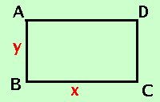

|
In un rettangolo di perimetro cm. 56 la base supera di 4 il doppio dell'altezza: determinarne l'area  Come prima cosa costruiamo la figura La prima relazione e' il perimetro = 56 cm, pero' devo scriverla per esteso, scrivero' AB _ + BC _ + CD _ + AD _ = 56 cm Da notare che i lati opposti del rettangolo sono uguali La seconda relazione mi dice che la base supera di 4 il doppio dell'altezza: sviluppo BC _ = 4 + 2AB _ Da notare che nelle due relazioni gli elementi che non conosco si riducono a due perche' AB=CD e BC=AD Per calcolare l'area devo trovare la base e l'altezza, quindi pongo base = BC _ = x altezza = AB _ = y sostituisco nella prima relazione y + x + y + x = 56 2x + 2y = 56 divido per 2 ed ottengo la prima relazione: x + y = 28 sostituisco nella seconda relazione x = 4 + 2y x - 2y = 4 Metto a sistema le due relazioni x - 2y = 4 ricavo la x dalla prima equazione x - 2y = 4 sostituisco nella seconda equazione 28 - y - 2y = 4 sommo e porto il 28 dopo l'uguale -3y = 4 - 28 -3y = -24 nella seconda equazione divido entrambe i termini per -3 y = 8 Sostituisco il valore della y che ho trovato, nella prima equazione y = 8 y = 8 Quindi: BC _ = x = 20 cm AB _ = 8 cm Devo trovare l'area (base per altezza) As = BC _ · AB _ = 20 cm · 8 cm = 160 cm2 |